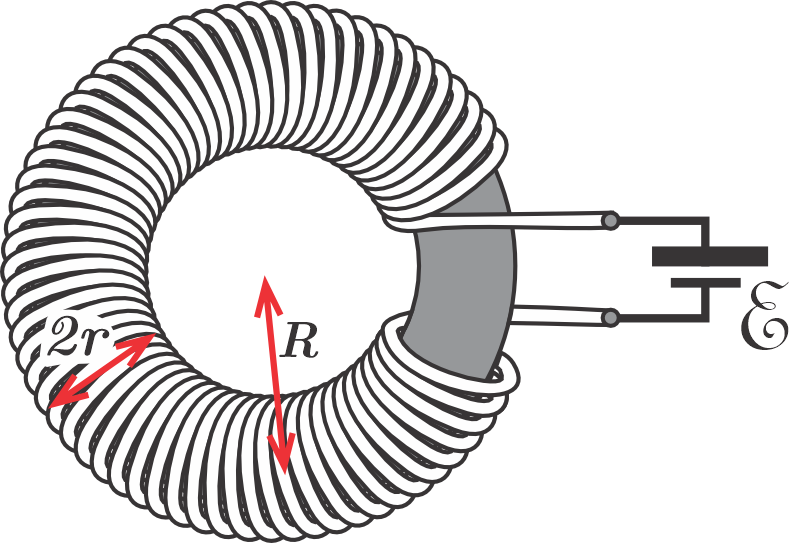
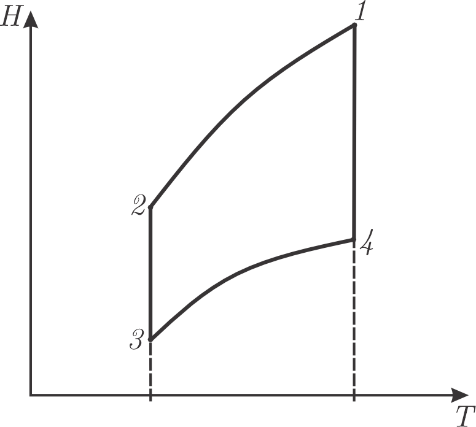

냉동 순환 과정은 도달하려는 온도에 적합한 특성을 가진 계로 수행되어야 한다. 100년 전인 1926년, 화학자 William Giauque와 그와 독립적으로 물리학자 Peter Debye는 1 K보다 훨씬 낮은 온도를 얻기 위한 이상적인 계로 상자성 염을 제안했다. 실제로 그다음 10년부터 0.0044 K까지 낮은 온도가 달성되었다(Wander de Haas와 Gerrit Wiersma, 1935, 라이덴 저온 연구소). 이 문제에서는 상자성 카르노 냉동 순환 과정을 다룬다.

그림 3a.
그림 3a와 같이, 평균 반지름 $R$, 안쪽 반지름 $r$인 균질하고 등방적인 상자성 물질로 만든 원환체(torus)에 절연된 도선을 감고 그 양 끝을 외부 전압원(기전력)에 연결한다. 도선의 저항은 매우 작아 도선의 발열에 의한 에너지 손실은 무시할 수 있다. 도선은 촘촘히 감겨 있으며 총 $N$번 감겨 있다. 또한 $r\ll R$이라고 가정하여, 원환체 전체에서 장 $\vec H$와 $\vec B$, 그리고 자기화 $\vec M$의 크기가 거의 일정하다고 본다. $V$와 $A$를 각각 원환체의 부피와 단면적이라 하자. 이후 상자성 원환체를 Pm-T로 줄여 부른다.
상자성 물질에서 $\vec M$은 $\vec H$와 나란하며 다음 관계가 성립한다.
에너지 전달 부호 규약: 이 문제에서 일($W$)과 열($Q$)은 계로 들어올 때 양(+), 계에서 나갈 때 음(−)으로 본다.
힌트: 자성 물질에서 $\oint_C\vec H\cdot d\vec\ell=I_C$이며, $I_C$는 닫힌 곡선 $C$로 둘러싸인 면을 지나는 알짜 자유 전류이다.
T3-A1 [0.2점]. 원환체 안 $\vec H$의 크기를 $H$라 하자. $H$를 $N$, $A$, $V$와 도선에 흐르는 순간 전류 $I$로 나타내어라.
T3-A2 [0.6점]. 외부 전압원이 $\vec B$의 크기를 $dB$만큼 바꾸기 위해 하는 일을 $dW_{emf}$라 하자. $dW_{emf}$를 $V$, $H$, $dB$로 나타내어라.
T3-A3 [0.2점]. 전압원이 한 전체 일 $dW_{emf}$는 두 부분으로 나눌 수 있다. 원환체의 중심이 진공일 때 자기장을 바꾸는 데 드는 일 $dW_{vac}$와, 상자성 물질 자체에 한 일 $dW$이다. $dW$를 $\mu_0$, $H$, $V$, $dM$으로 나타내어라.
다음 표는 이상 기체와 Pm-T 두 열역학계를 비교한 것이다. 이 정보와 T3-A3의 답을 이용하여 아래 문제를 풀어라. 이 정보는 파트 C에서도 사용된다. T3-A3에서 $dW$를 구하지 못했다면 $dW=\alpha V\mu_0HdM$을 사용해도 좋다($\alpha$는 어떤 수). 상자성 원환체의 부피 $V$는 일정하므로 압력에 의한 일은 없다. 아래에서 $T$는 모든 경우에 온도를 뜻한다.
| 이상 기체 | 상자성 원환체 (Pm-T) |
|---|---|
| 상태 함수: $P,V$와 온도 $T$ | 상태 함수: $H,M$과 온도 $T$ |
| 상수: $R,\gamma$와 몰수 $n$ | 상수: $K,\lambda$와 몰수 $n$ |
| 상태 방정식: $PV=nRT$ | 상태 방정식: $TMV=nKH$ |
| $V$ 일정에서의 열용량: $C_V=nR/(\gamma-1)$ | $M$ 일정에서의 열용량: $C_M=n\lambda/T^2$ |
| 임의의 과정에서 내부 에너지 $U$는 $dU=C_VdT$를 만족 | 임의의 과정에서 내부 에너지 $U$는 $dU=C_MdT$를 만족 |
$K$와 $\lambda$는 원환체를 이루는 물질이 정하는 상수이다. 표에 주어진 식들은 증명 없이 그대로 사용해도 된다.
T3-B1 [1.5점]. $\vec H$의 크기가 일정한 온도 $T$에서 $H_i$에서 $H_f$로 변하면 Pm-T와 그 환경 사이에 에너지 $Q$가 전달된다. $Q$를 $\mu_0$, $n$, $V$, $K$, $H_i$, $H_f$, $T$로 나타내어라.
T3-B2 [1.5점]. $\vec H$의 크기가 단열적으로 $H_i$에서 $H_f$로 변하면 Pm-T의 온도가 $T_i$에서 $T_f$로 변한다. $\Delta T=T_f-T_i$를 $\mu_0$, $V$, $n$, $K$, $\lambda$, $H_i$, $H_f$, $T_i$로 나타내어라.

그림 3b.
Pm-T가 수행하는 카르노 냉동 순환 과정 $1\to2\to3\to4\to1$의 $H$ 대 $T$ 도표가 그림 3b에 나타나 있다. 이 순환 과정에서 다음과 같이 둔다.
$T_h$: 고온 열원의 온도
$T_c$: 저온 열원의 온도
$Q_h$: 고온 열원으로 전달된 열의 절댓값
$Q_c$: 저온 열원에서 흡수한 열의 절댓값
T3-C1 [0.2점]. $H$ 대 $T$ 도표의 $T$축에 $T_h$와 $T_c$를 표시하라. 또한 $Q_h$와 $Q_c$의 전달이 각각 일어나는 과정을 표시하라.
T3-C2 [1.5점]. $M_1$, $M_2$, $M_3$, $M_4$를 이 순환 과정의 각 꼭짓점에서 $\vec M$의 크기라 하자. $M_1$을 $M_2$, $M_3$, $M_4$로 나타내어라.
T3-C3 [0.8점]. 처음에 1.00 K인 액체 헬륨 1.00 L를 냉각하기 위해, 크로뮴산 칼륨으로 만든 2.0몰의 Pm-T를 사용한다고 하자. 이 물질에 대해 $K=$ 1.87 $\times10^{-6}$ K·m3/mol, 밀도는 $2730$ kg/m3, 몰질량은 $0.19$ kg/mol이다. Pm-T는 $H_1=$ 411624 A/m, $H_2=$ 311306 A/m, $H_3=$ 204618 A/m, $H_4=$ 240446 A/m인 카르노 냉동 순환 과정을 수행한다. 한 번의 작동 순환 후 액체 헬륨의 최종 온도를 구하라. 액체 헬륨에 대해 비열 용량 $c=$ 100 J/(kg·K)와 밀도 $\rho=$ 130 kg/m3는 모두 일정하다고 가정한다.
T3-C4 [2.0점]. 열용량이 $C_c$로 일정한 물체의 온도를 계속 낮추기 위해, 냉동기로 전달되는 일률 $P$가 일정하게 유지되도록 카르노 순환 과정을 시간에 걸쳐 반복한다. 고온 열원의 온도 $T_h$는 일정하게 유지되고, 각 작동 순환마다 냉각되는 물체의 온도 $T_c$가 $dT_c$만큼 감소하며 $dQ_c/dQ_h=T_c/T_h$를 만족한다고 가정한다. $t=0$에서 $T_c=T_0$일 때, 냉각되는 물체가 온도 $T<T_0$에 도달하기까지 카르노 냉동기가 작동해야 하는 시간 $t$를 구하라. 답은 $C_c$, $T_h$, $P$, $T_0$, $T$로 나타내어라.
T3-C5 [1.5점]. 냉동기의 효율은 성능계수 $\mathrm{COP}=Q_c/W$로 정량화된다. 시간 $t$까지 수행된 모든 순환 과정을 통틀어 T3-C4의 냉동기의 전체 COP를 구하라. 답은 $T_0$, $T_h$, $T$로 나타내어라.